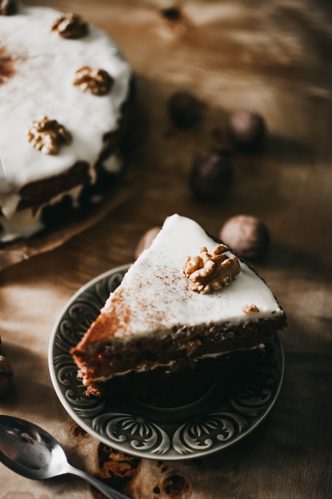

Carrot Cake

Delicious and easy to make. Carrot cake has held the number position as my favorite cozy food for years.
If someone asked me to reccomend them a cake, this would be the first one I think of.
If you do not have a sweet tooth, beware of this cake though because it has the ability to be very
sweet depending on the recipe.
Ingredients
The Cake
- 2 cups (260 grams) all-purpose flour
- 2 teaspoons baking soda
- 1/2 teaspoon fine sea salt
- 1 ½ teaspoons ground cinnamon
- 1 ¼ cups (295 ml) canola or other vegetable oil
- 1 cup (200 grams) granulated sugar
- 1 cup (190 grams) lightly packed brown sugar
- 1 teaspoon vanilla extract
- 4 large eggs, at room temperature
- 3 cups (300 grams) grated peeled carrots, 5 to 6 medium carrots
- 1 cup (100 grams) coarsely chopped pecans
- 1/2 cup (65 grams) raisins
The Frosting
- 8 ounces (225 grams) cream cheese, at room temperature
- 1 ¼ cups (140 grams) powdered sugar
- 1/3 cup (80 ml) cold heavy whipping cream
- 1/2 cup (50 grams) coarsely chopped pecans, for topping cake
Steps
The Batter
- Position a rack in the middle of the oven.
Grease two 9-inch round cake pans, line the bottom with parchment paper and then grease the top.
Or grease and flour the bottom and sides of both pans.
- Heat the oven to 350 degrees Fahrenheit (176C).
- Whisk flour, baking soda, salt, and cinnamon in a medium bowl until very well blended.
- In a separate bowl, whisk the oil, granulated sugar, brown sugar, and vanilla.
- Add the eggs, one at a time, whisking after each one.
- Switch to a large rubber spatula. Scrape the sides and bottom of the bowl,
then add the dry ingredients in three parts, gently stirring until they disappear and the batter is smooth.
- Stir in the carrots, nuts, and raisins.
Baking Time
- Divide the cake batter between the prepared cake pans.
- Bake until the tops of the cake layers are springy when touched and when a toothpick inserted
into the center of the cake comes out clean, 35 to 45 minutes.
- Cool cakes in the pans for 15 minutes, then carefully turn the cake layers out onto cooling racks.
Remove the parchment paper and cool completely. If you find that a cake layer is sticking to the bottom of the pan,
leave the cake pan upside down and allow gravity to do its thing.
Finishing Up
- In a large bowl, beat the cream cheese with a handheld mixer on medium speed until creamy, about 1 minute.
- Beat in the powdered sugar, a 1/4 cup at a time, until fluffy.
- Pour in the whipping cream. Beat on medium speed for 2 to 3 minutes, or until the frosting is whipped and creamy. This frosting resembles the texture of whipped cream.
Chill covered until ready to frost the cake.
- When the cake layers are completely cool, frost the top of one cake layer, and place the second cake layer on top.
- Add the remaining frosting to the top of the carrot cake and use a butter knife or small spatula to swirl the frosting around. Leave the sides of the cake unfrosted.
Finish with a handful of nuts on top.
Incredibly Moist and Easy Carrot Cake Recipe from Inspired Taste